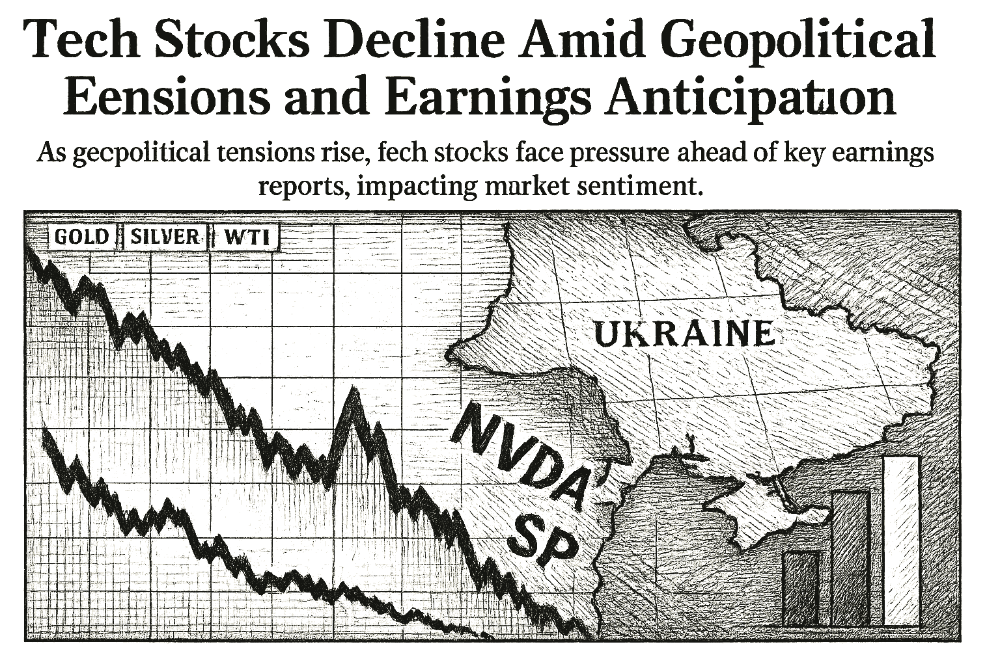

SPY
Current: $741.10Change: -14.62 (-1.94%)
Updated:
Source: yahoo_chartFreshness: fresh


Investors react to geopolitical tensions and disappointing earnings reports, leading to significant declines in major indices.

Today's Headline: Market Faces Pressure as Iran Conflict Escalates and Earnings Disappoint
Setup: Investors react to geopolitical tensions and disappointing earnings reports, leading to significant declines in major indices.
Primary Topic: Market Performance
Specific Development: Major U.S. indices are experiencing declines as geopolitical tensions rise due to the Iran conflict, compounded by disappointing earnings from key companies.
Why Today Is Different: The combination of geopolitical instability and earnings misses is reshaping investor sentiment and market strategies, marking a significant shift from previous sessions.
Secondary Topics: Earnings Reports; Geopolitical Tensions
Tone: cautious
Sectors: Technology; Energy
Companies: XRAY; NVDA; ENB
Commodities: Brent; WTI
Countries Or Regions: Iran; Bahrain
Macro Themes: Earnings Disappointments; Geopolitical Risks
Why This Story: The interplay between geopolitical risks and earnings performance is critical for market direction, especially as investors navigate heightened volatility.
Why This Matters: XRAY Stock Declines as Q3 Earnings & Sales Miss Estimates, Outlook Cut is the clearest current evidence-led frame for Joshua's observation-only review; missing facts remain explicit intelligence gaps.
Summary: U.S. indices are down significantly, with the SPY down 1.94%, QQQ down 4.22%, and IWM down 2.16%. Brent and WTI crude prices are also down sharply, reflecting market concerns over geopolitical tensions.
What Happened Overnight: Major U.S. indices experienced declines due to geopolitical tensions and disappointing earnings reports.
What Changed Materially: The escalation of the Iran conflict has heightened market volatility and investor caution.
Which Assets Sectors Are Affected: Technology and Energy sectors are particularly impacted, with major declines in related ETFs.
Does It Look Like Noise Or A Real Regime Input: This appears to be a significant regime input rather than mere market noise.
Why This Matters: Joshua can use verified cross-asset moves and deterministic risk context while keeping causation explicitly unresolved.

ANGX Earnings Expectations — 2026-11-10, After Close
Consensus EPS: $-0.07
Year-ago EPS: unavailable
Expected EPS growth: unavailable
Consensus revenue: $143.2M
Year-ago revenue: unavailable
Expected revenue growth: unavailable
Source: finnhub_earnings_calendar · As of: 2026-11-06T15:15:01.410195+00:00 · Freshness: current
QBTS Earnings Expectations — 2026-11-10, Before Open
Consensus EPS: $-0.10
Year-ago EPS: unavailable
Expected EPS growth: unavailable
Consensus revenue: $4.4M
Year-ago revenue: unavailable
Expected revenue growth: unavailable
Source: finnhub_earnings_calendar · As of: 2026-11-06T15:15:01.410195+00:00 · Freshness: current
IONQ Earnings Expectations — 2026-11-03, Time Unavailable
Consensus EPS: $-0.38
Year-ago EPS: unavailable
Expected EPS growth: unavailable
Consensus revenue: $144.5M
Year-ago revenue: unavailable
Expected revenue growth: unavailable
Source: finnhub_earnings_calendar · As of: 2026-11-06T15:15:01.410195+00:00 · Freshness: current
LTC Earnings Expectations — 2026-11-03, Time Unavailable
Consensus EPS: $0.52
Year-ago EPS: unavailable
Expected EPS growth: unavailable
Consensus revenue: $26.6M
Year-ago revenue: unavailable
Expected revenue growth: unavailable
Source: finnhub_earnings_calendar · As of: 2026-11-06T15:15:01.410195+00:00 · Freshness: current
IONQ Earnings Expectations — 2026-11-05, Time Unavailable
Consensus EPS: $-0.38
Year-ago EPS: unavailable
Expected EPS growth: unavailable
Consensus revenue: $144.5M
Year-ago revenue: unavailable
Expected revenue growth: unavailable
Source: finnhub_earnings_calendar · As of: 2026-11-06T15:15:01.410195+00:00 · Freshness: current
LINK Earnings Expectations — 2026-11-05, Time Unavailable
Consensus EPS: $-0.04
Year-ago EPS: unavailable
Expected EPS growth: unavailable
Consensus revenue: $3.4M
Year-ago revenue: unavailable
Expected revenue growth: unavailable
Source: finnhub_earnings_calendar · As of: 2026-11-06T15:15:01.410195+00:00 · Freshness: current
QBTS Earnings Expectations — 2026-11-05, Time Unavailable
Consensus EPS: $-0.10
Year-ago EPS: unavailable
Expected EPS growth: unavailable
Consensus revenue: $4.4M
Year-ago revenue: unavailable
Expected revenue growth: unavailable
Source: finnhub_earnings_calendar · As of: 2026-11-06T15:15:01.410195+00:00 · Freshness: current
VTRS Earnings Expectations — 2026-11-05, Time Unavailable
Consensus EPS: $0.65
Year-ago EPS: unavailable
Expected EPS growth: unavailable
Consensus revenue: $3.9B
Year-ago revenue: unavailable
Expected revenue growth: unavailable
Source: finnhub_earnings_calendar · As of: 2026-11-06T15:15:01.410195+00:00 · Freshness: current
XRAY Earnings Expectations — 2026-11-05, Before Open
Consensus EPS: $0.32
Year-ago EPS: unavailable
Expected EPS growth: unavailable
Consensus revenue: $880.0M
Year-ago revenue: unavailable
Expected revenue growth: unavailable
Source: finnhub_earnings_calendar · As of: 2026-11-06T15:15:01.410195+00:00 · Freshness: current

- WOPR learning pipeline: Collecting samples
- Candidates evaluated 24h: 0
- Current gate: Evidence
- Notification ledger events in 24h: 3
- Pending orders created/canceled/filled/expired: 1/0/0/0
- Pending lifecycle interpretation: Pending-order cancellations have trackable reasons and no obvious rapid churn pattern.
- Portfolio risk: Label: High / Score: 100.0
- Latest intelligence gap report: intelligence_gap_report_2026-11-01.pdf
Why This Matters: The active gate is Evidence, so the key question is why candidates are stopping before approval, not how to force trades.

- Sentinel role: infrastructure and operational status only.
- State: ONLINE
- Last successful validation: 2026-11-06T15:14:44.137334+00:00
- Payloads accepted/rejected: 32511/253
- Node health score: 100
Why This Matters: Sentinel is ONLINE, so Joshua should use its context only to the extent the latest accepted pulse is fresh and authenticated.

CANDIDATES MOVING THROUGH JOSHUA'S INVESTMENT-REVIEW WORKFLOW
FROZEN DAILY BRIEF SNAPSHOT | 2026-11-06T15:14:09.781547+00:00
QUEUE SUMMARY | Investment Ready: 0 | Waiting for Price: 0 | Waiting for Evidence: 1 | Research Underway: 1 | Governance Hold: 5 | Monitor Only: 0
Investment-ready status: No candidates are currently Investment Ready.
#9 AVGO - Governance Hold [Moved Up 11->9]
Joshua's Thesis: Positive thesis not yet established.
Why Waiting: Governance gate has not cleared.
Price: 301.53 now; 357.70 preferred entry
What Unlocks It: Governance gate clears; Clear valuation support; Evidence that the business quality matches the risk being taken
Portfolio Fit: 0.0/100 — VERY LOW ↓
Portfolio Fit Drivers: projected Technology exposure 80.0%; projected AI infrastructure exposure 80.0%; candidate amount $100 vs $25 currently allocated
Candidate Risk: 100.0/100 — VERY HIGH ↑
Risk Drivers: projected Technology exposure 80.0%; projected AI infrastructure exposure 80.0%; candidate amount $100 vs $25 currently allocated
Next: Re-evaluate after the recorded gate clears. Owner: Columbo.
#10 NVDA - Waiting for Evidence [Moved Up 13->10]
Joshua's Thesis: Positive thesis not yet established.
Why Waiting: Positioning gate failed.
Price: 191.74 now; 213.27 preferred entry
What Unlocks It: Clear valuation support; Evidence that the business quality matches the risk being taken; Independent evidence streams pointing the same way
Portfolio Fit: 0.0/100 — VERY LOW ↓
Portfolio Fit Drivers: projected Technology exposure 80.0%; projected AI infrastructure exposure 80.0%; candidate amount $100 vs $25 currently allocated
Candidate Risk: 100.0/100 — VERY HIGH ↑
Risk Drivers: projected Technology exposure 80.0%; projected AI infrastructure exposure 80.0%; candidate amount $100 vs $25 currently allocated
Next: Positioning status must no longer be warning. Owner: Joshua.
#12 QBTS - Governance Hold
Joshua's Thesis: Positive thesis not yet established.
Why Waiting: Governance gate has not cleared.
Price: 9.82 now; 17.52 preferred entry
What Unlocks It: Governance gate clears; Clear valuation support; Evidence that the business quality matches the risk being taken
Portfolio Fit: 0.0/100 — VERY LOW ↓
Portfolio Fit Drivers: projected Unclassified exposure 100.0%; projected Unclassified exposure 100.0%; candidate amount $100 vs $25 currently allocated
Candidate Risk: 100.0/100 — VERY HIGH ↑
Risk Drivers: projected Unclassified exposure 100.0%; projected Unclassified exposure 100.0%; candidate amount $100 vs $25 currently allocated
Next: Re-evaluate after the recorded gate clears. Owner: Joshua.
#17 RCL - Governance Hold [Moved Up 18->17]
Joshua's Thesis: Positive thesis not yet established.
Why Waiting: Governance gate has not cleared.
Price: 328.91 now; 287.72 preferred entry
What Unlocks It: Governance gate clears; Clear valuation support; Evidence that the business quality matches the risk being taken
Portfolio Fit: 0.0/100 — VERY LOW ↓
Portfolio Fit Drivers: projected Unclassified exposure 100.0%; projected Unclassified exposure 100.0%; candidate amount $100 vs $25 currently allocated
Candidate Risk: 100.0/100 — VERY HIGH ↑
Risk Drivers: projected Unclassified exposure 100.0%; projected Unclassified exposure 100.0%; candidate amount $100 vs $25 currently allocated
Next: Re-evaluate after the recorded gate clears. Owner: Columbo.
#23 PLTR - Governance Hold
Joshua's Thesis: Positive thesis not yet established.
Why Waiting: Governance gate has not cleared.
Price: 162.22 now; 196.14 preferred entry
What Unlocks It: Governance gate clears; Clear valuation support; Evidence that the business quality matches the risk being taken
Portfolio Fit: 0.0/100 — VERY LOW ↓
Portfolio Fit Drivers: projected Technology exposure 80.0%; projected AI software exposure 80.0%; candidate amount $100 vs $25 currently allocated
Candidate Risk: 100.0/100 — VERY HIGH ↑
Risk Drivers: projected Technology exposure 80.0%; projected AI software exposure 80.0%; candidate amount $100 vs $25 currently allocated
Next: Re-evaluate after the recorded gate clears. Owner: Columbo.
#24 UUUU - Governance Hold [NEW]
Joshua's Thesis: Positive thesis not yet established.
Why Waiting: Governance gate has not cleared.
Price: 6.91 now; 14.60 preferred entry
What Unlocks It: Governance gate clears; Clear valuation support; Evidence that the business quality matches the risk being taken
Portfolio Fit: 0.0/100 — VERY LOW
Portfolio Fit Drivers: projected Unclassified exposure 100.0%; projected Unclassified exposure 100.0%; candidate amount $100 vs $25 currently allocated
Candidate Risk: 100.0/100 — VERY HIGH
Risk Drivers: projected Unclassified exposure 100.0%; projected Unclassified exposure 100.0%; candidate amount $100 vs $25 currently allocated
Next: Re-evaluate after the recorded gate clears. Owner: Advisory Committee.
#25 DIA - Research Underway
Joshua's Thesis: Positive thesis not yet established.
Why Waiting: Research evidence is still being gathered.
Price: Current price unavailable.; Preferred entry not established.
What Unlocks It: Clear valuation support; Evidence that the business quality matches the risk being taken; Independent evidence streams pointing the same way
Portfolio Fit: 0.0/100 — VERY LOW ↓
Portfolio Fit Drivers: projected ETF exposure 80.0%; projected Broad market exposure 80.0%; candidate amount $100 vs $25 currently allocated
Candidate Risk: 100.0/100 — VERY HIGH ↑
Risk Drivers: projected ETF exposure 80.0%; projected Broad market exposure 80.0%; candidate amount $100 vs $25 currently allocated
Next: Clear valuation support; Evidence that the business quality matches the risk being taken; Independent evidence streams pointing the same way. Owner: Columbo.
Since the prior Chronicle: ANGX - Removed; XRAY - Removed
Observation only. This section creates no recommendation, order, authority, or execution instruction.

- Which recorded governance requirement must clear before AVGO can advance?
- If NVDA reaches the recorded price condition <= 213.27, which recorded evidence and governance requirements would still remain?
- Which recorded governance requirement must clear before QBTS can advance?
- Which recorded governance requirement must clear before RCL can advance?
- What ANGX EPS or revenue result would materially change the current recorded thesis?

The market's reaction to geopolitical tensions and disappointing earnings highlights a shift in investor sentiment towards caution. The significant declines in major indices and the rise in the VIX indicate increased volatility and risk aversion. As geopolitical risks escalate, particularly in the Middle East, investors are likely to reassess their positions, leading to further market fluctuations. Monitoring upcoming earnings reports and geopolitical developments will be crucial for understanding market direction.

Compared to: 2026-11-05
- Market weather: Elevated -> High
- Top opportunity: FDX -> DELL
- Joshua gate: Still Evidence
- 2Y Treasury.last_price: 4.58 -> 4.46 (down); 2Y Treasury.last_price changed 2.62% versus the prior frozen Chronicle snapshot.
- 2Y Treasury.percent_change: -0.6507592190889424 -> -2.6200873362445436 (down); 2Y Treasury.percent_change changed 302.62% versus the prior frozen Chronicle snapshot.
- 10Y Treasury.last_price: 4.9 -> 4.84 (down); 10Y Treasury.last_price changed 1.22% versus the prior frozen Chronicle snapshot.
- 10Y Treasury.percent_change: -1.0101010101010066 -> -1.2244897959183774 (down); 10Y Treasury.percent_change changed 21.22% versus the prior frozen Chronicle snapshot.
- 30Y Treasury.last_price: 5.28 -> 5.25 (down); 30Y Treasury.last_price changed 0.57% versus the prior frozen Chronicle snapshot.
- 30Y Treasury.percent_change: -0.7518796992481209 -> -0.5681818181818229 (up); 30Y Treasury.percent_change changed 24.43% versus the prior frozen Chronicle snapshot.
- SPY.last_price: 750.3 -> 741.095 (down); SPY.last_price changed 1.23% versus the prior frozen Chronicle snapshot.
- SPY.percent_change: -2.477383799521688 -> -1.9352405652887312 (up); SPY.percent_change changed 21.88% versus the prior frozen Chronicle snapshot.
- QQQ.last_price: 662.56 -> 661.37 (down); QQQ.last_price changed 0.18% versus the prior frozen Chronicle snapshot.
- QQQ.percent_change: -7.378309615008259 -> -4.217294964445539 (up); QQQ.percent_change changed 42.84% versus the prior frozen Chronicle snapshot.
- IWM.last_price: 278.96 -> 273.3 (down); IWM.last_price changed 2.03% versus the prior frozen Chronicle snapshot.
- IWM.percent_change: -1.7781064047040638 -> -2.1587369777682217 (down); IWM.percent_change changed 21.41% versus the prior frozen Chronicle snapshot.

The escalation of the Iran conflict and the impact of disappointing earnings reports have shifted market sentiment towards a more cautious outlook.
Yesterday's warnings about market volatility and geopolitical risks remain relevant as tensions escalate.
Portfolio Construction Review
Current allocation: 25.0 allocated.
Largest sector: Unclassified at 100.0%.
Largest theme: Unclassified at 100.0%.
Diversification: Concentrated (0.0).
Cash allocation: 97.5% unallocated.
Recommended exposure: DELL at portfolio-fit score 0.0.
Portfolio fit: DELL has strong standalone evidence, but it increases portfolio concentration.
Why This Matters: Portfolio Manager evaluates whether an opportunity improves this portfolio; it does not select the investment, vote, or authorize execution.

Investigate how geopolitical tensions are influencing sector performance and investor sentiment today.

| Can trigger trade | no |
| Can modify trade rules | no |
| Can add watch items | yes |
| Can add review questions | yes |
| Can adjust confidence notes | yes |
| Input policy | external_intelligence_plus_sanitized_internal_observations |
| External policy | The Editor-in-Chief synthesizes current world/market context where available and labels unknowns; provider/model provenance remains separate. |
| Internal policy | Joshua/WOPR/Sentinel facts are supplied as sanitized observation-only summaries. |
| Editorial model | gpt-4o-mini |
- Selected by a deterministic daily rotation through symbols already present in the persisted Chronicle snapshot.
- Next earnings: November 3, 2026 (time unknown); status: post_event.
- Source: finnhub_earnings_calendar.
- Enbridge Inc. 2026 Q3 - Results - Earnings Call Presentation
- Desk: earnings; source: SeekingAlpha; linked symbols: ENB.
- Published: 11/6/26 02:32 MST.
- High-impact watch: FOMC Minutes Meeting of October 27-28 - 11/18/26 12:00 MST.
- Affected assets: US equities, Treasuries, USD; source: federal_reserve_calendar.
- IONQ earnings: November 3, 2026, time unknown.
- LTC earnings: November 3, 2026, time unknown.
- IONQ earnings: November 5, 2026, time unknown.
- Communication Services: 5.33% session performance; source: persisted sector ledger.
- Consumer Discretionary: 2.89% session performance; source: persisted sector ledger.
- Real Estate: 2.60% session performance; source: persisted sector ledger.
- RUSSELL FUTURES: -2.68% recorded move; price: 2742.2.
- Session: open; catalyst status: possible; source: yahoo_chart.
- Iran Conflict; why it matters: The ongoing conflict could lead to further market volatility and impact energy prices.
- State: weakening; score: 39.80/100; advance/decline ratio: 0.17.
- Above 50-day average: 62.20%; sample: 119; provider: sentinel_sampled_breadth.
- Decision outcomes evaluated: 16; currently untestable: 0.
- Warning review: unknown 3; confidence calibration: insufficient_sample.
- Current macro regime: defensive_rotation; change probability: unavailable.
- Risk dashboard: elevated (75/100); breadth: weakening; sentiment: cautious.
- Scenario board only - a current-state observation, not a forecast or execution instruction.
- Built a distinguished multi-decade macro-investing record at Duquesne and the Quantum Fund.
- Published quotation: "The best economist I know is the inside of the stock market."
- Published framework: Identify consequential macro shifts and liquidity trends, use price action to test the thesis, concentrate when the risk-reward is exceptional, and reduce exposure quickly when the facts change.
- Committee lens: Druckenmiller adds macro regime, liquidity, and asymmetry: Joshua must ask whether the backdrop supports the trade and whether conviction is proportionate to the opportunity.
- Public philosophy profile only; no participation, endorsement, or current recommendation is implied.
- If NVDA reaches the recorded price condition <= 213.27, which recorded evidence and governance requirements would still remain?
- DELL: No canonical symbol-specific material event is linked.
- Attach the missing DELL evidence before the next committee review.
- Define evidence that would confirm or retire each unresolved warning before the next review window.
- Which recorded governance requirement must clear before AVGO can advance?
- If NVDA reaches the recorded price condition <= 213.27, which recorded evidence and governance requirements would still remain?
- Which recorded governance requirement must clear before QBTS can advance?
- Which recorded governance requirement must clear before RCL can advance?
- Evidence agenda: DELL - No canonical symbol-specific material event is linked.
- Proposed review: Earnings Reports; why it matters: Disappointing earnings could signal broader economic issues and affect market sentiment.
- Proposed review: Oil Prices; why it matters: Fluctuations in oil prices can affect inflation and economic outlook.
- Canonical instruments reviewed: 24; delayed 6, fresh 18.
- Leading sources: yahoo_chart (21), treasury_official_yield_curve (3).
- Snapshot recorded: 11/6/26 08:15 MST.
Market Faces Pressure as Iran Conflict Escalates and Earnings Disappoint
Storm meter: Elevated
#9 AVGO - Governance Hold [Moved Up 11->9]
Observation mode: observation_only
Watch: Iran Conflict; why it matters: The ongoing conflict could lead to further market volatility and impact energy prices.
Question: Which recorded governance requirement must clear before AVGO can advance?